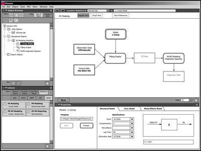

On the town with Kelly
Jacob, Max, Ben and me on Bernal Hill
The family at Machu Picchu
Building the school float for Carnaval
Camping in Yosemite

Building picnic tables at Big Bend with Tom
Professional Background
My design career began with a Masters Degree from Stanford's Product Design Program
Newer marketing materials but same philosophy as when I was there
Trying to combine practical and whimsical with bowls for jello
In complete seriousness: a braking system for wheelchairs
My first real design job was with a medical device company.
Old skool: marker rendering on a blueprint
Assembly robot: my first software interface
A complex system
I migrated from the design of physical goods to software in 1995 when my first glimpse of the Web through the Mosaic browser thrilled me with the possibilities of this new communication medium and at the same time horrified me with the abysmal quality of its product design.
Lest anyone forget: high web style c.1995 (not my work, included here for context!)
Doing my best to add some beauty to the early web
After a few years running my own small shop, I did my music start up turn and then tried corporate.
A music player that didn't look like a car radio was revolutionary
Pre-iTunes, we wanted to be iTunes
Here I learned to think about risk
Next was several years immersed in drug development, statistics, modeling, simulation, the management of complexity and a lot more about risk.
I was designer of everything here, including marketing presentations
I introduced image and narrative as tools to communicate our offering
Technical illustrations helped product strategy discussions
An interface that tried to visualize scenario risk
An interface for managing a system of related models
An interface for building models
Recently, I've worked in both the consumer and open-source enterprise software design space.
I worked at the Apple Online Store
Jaspersoft makes open source data reporting software